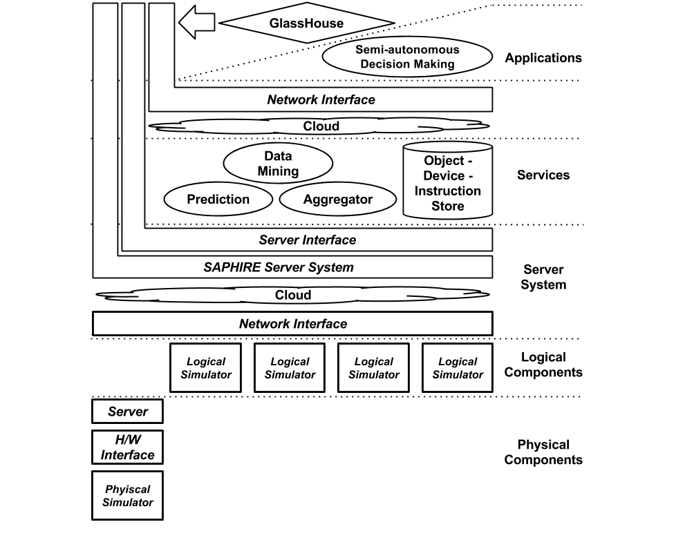

SAPHIRE
(Smart semi-Autonomous Processing Household repertoIRE)
The main goal of this project aimed at providing an intelligent household prototype that understands user voice commands and needs such that it can automatically orchestrate household resources and perform tasks in favor of user goals. The project was called SAPHIRE, and I designed and developed the server system of it. The server was built using Node.js and deployed using Amazon Elastic Beanstalk.
I also incorporated MongoDB for a device and object model database, utilized Socket.io in the server and its Java client library in the Google Glass application (this application was named as "GlassHouse") to establish a real-time communication channel between the two.
I also developed an online animation platform (minus the actual animator images) which simulated a desk lamp, a refrigerator, a microwave, a washer and an iRobot Create, imagining that those devices will be connected to the household network and communicating with the server. Also, I equipped an actual iRobot Create with a Beaglebone Black and connected it to the SAPHIRE server -- such that user's voice commands (for instance, "clean the floor" or "stop cleaning") via GlassHouse can duplicate corresponding actions on the device as well as on the animator.
The Schematic diagram of the SAPHIRE system
Simulators